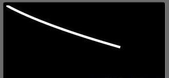
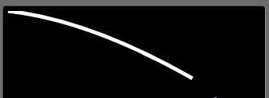
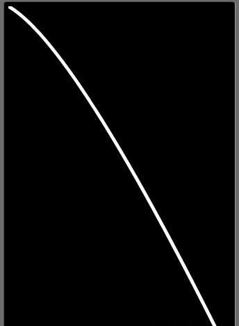
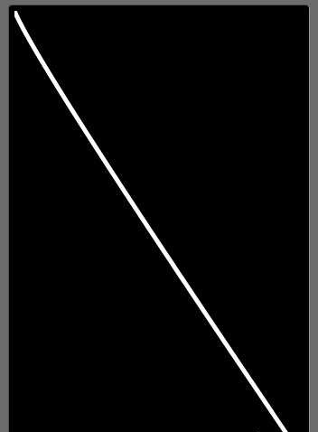

【Android游戏开发二十五】Android平台使用《贝赛尔曲线》！
首先对于《赛贝尔曲线》不是很了解的童鞋，请自觉白度百科、google等等...
为了方便偷懒的童鞋，这里给个《贝赛尔曲线》百科地址，以及一段话简述《贝赛尔曲线》：
《贝赛尔曲线》白度百科快速地址：http://baike.baidu.com/view/4019466.htm
贝塞尔曲线又称贝兹曲线或贝济埃曲线，一般的矢量图形软件通过它来精确画出曲线，贝兹曲线由线段与节点组成，节点是可拖动的支点，线段像可伸缩的皮筋；
上面这一段话其实就“线段像可伸缩的皮筋”这一句比较重要，也很容易理解； 至于贝赛尔曲线的实现，在Android中极其的简单，因为它是Android封装的一个方法，这个能不简单么。只不过它隐藏的比较深，它隐藏于Path类中，方法如下：
android.graphics.Path.quadTo(float x1, float y1, float x2, float y2)
Since: API Level 1
此方参数解释：
第一个参数：操作点的x坐标
第二个参数：操作点的y坐标
第三个参数：结束点的x坐标
第四个参数：结束点的y坐标
从API中看出，赛贝尔曲线从API－1就开始支持了；
熟悉方法后，下面就来实现：
SurfaceView框架不多讲，看过我博客的都应该知道的；直接看MySurfaceView类，此类继承SurfaceView ，是游戏的主视图 这里为了更清晰的讲解：这里部分代码先不贴出来了，最后会整体贴出，当然源码也是免费在最后提供～
首先是定义相关的成员变量：
private int startX, startY, controlX, controlY, endX, endY;// Path
private Path path;
// 为了不影响主画笔，这里绘制贝赛尔曲线单独用一个新画笔
private Paint paintQ;
// 随机库（让贝赛尔曲线更明显）
private Random random;
本类构造函数：
/*** SurfaceView初始化函数
*/
public MySurfaceView(Context context) {
super(context);
...
//贝赛尔曲线相关初始化
path = new Path();
paintQ = new Paint();
paintQ.setAntiAlias(true);
paintQ.setStyle(Style.STROKE);
paintQ.setStrokeWidth(5);
paintQ.setColor(Color.WHITE);
random = new Random();
...
}
接着我把绘制贝赛尔曲线封装一个方法了，函数如下：
/*** 绘制贝赛尔曲线
* @param canvas 主画布
*/
public void drawQpath(Canvas canvas) {
path.reset();// 重置path
// 贝赛尔曲线的起始点
path.moveTo(startX, startY);
// 设置贝赛尔曲线的操作点以及终止点
path.quadTo(controlX, controlY, endX, endY);
// 绘制贝赛尔曲线（Path）
canvas.drawPath(path, paintQ);
}
最后是用户触屏监听函数以及逻辑函数：
/*** 触屏事件监听
*/
@Override
public boolean onTouchEvent(MotionEvent event) {
endX = (int) event.getX();
endY = (int) event.getY();
return true;
}
/**
* 游戏逻辑
*/
private void logic() {
if (endX != 0 && endY != 0) {
// 设置操作点为线段x/y的一半
controlX = random.nextInt((endX - startX) / 2);
controlY = random.nextInt((endY - startY) / 2);
}
}
整个代码很easy～主要是贝赛尔函数的参数，尤其是操作点，操作点的各种不同可以实现不同的效果，这里我简单的统一的讲操作点设置成用户触屏点的x,y的一半，呵呵偷懒了～嘻嘻～
我把贝赛尔的操作点写在了逻辑logic（）函数中，不断的执行，并且每次利用nextInt函数得到随机的操作点，主要为了让其曲线不断的变化从而形成一个震动的曲线运动轨迹；
ok，效果接图如下：




这里可能由于图片是静止的效果看起来不是很明显，大家可以运行源码来观察，好了～本节就这样吧；
/*** 赛贝尔曲线
*/
public class MySurfaceView extends SurfaceView implements Callback, Runnable {
private SurfaceHolder sfh;
private Paint paint;
private Thread th;
private boolean flag;
private Canvas canvas;
public static int screenW, screenH;
// -----------以上是SurfaceView游戏框架
// 贝赛尔曲线成员变量(起始点，控制（操作点），终止点，3点坐标)
private int startX, startY, controlX, controlY, endX, endY;
// Path
private Path path;
// 为了不影响主画笔，这里绘制贝赛尔曲线单独用一个新画笔
private Paint paintQ;
// 随机库（让贝赛尔曲线更明显）
private Random random;
/**
* SurfaceView初始化函数
*/
public MySurfaceView(Context context) {
super(context);
sfh = this.getHolder();
sfh.addCallback(this);
paint = new Paint();
paint.setColor(Color.WHITE);
paint.setAntiAlias(true);
setFocusable(true);
// -----------以上是SurfaceView游戏框架
// 贝赛尔曲线相关初始化
path = new Path();
paintQ = new Paint();
paintQ.setAntiAlias(true);
paintQ.setStyle(Style.STROKE);
paintQ.setStrokeWidth(5);
paintQ.setColor(Color.WHITE);
random = new Random();
}
/**
* SurfaceView视图创建，响应此函数
*/
public void surfaceCreated(SurfaceHolder holder) {
screenW = this.getWidth();
screenH = this.getHeight();
flag = true;
// 实例线程
th = new Thread(this);
// 启动线程
th.start();
// -----------以上是SurfaceView游戏框架
}
/**
* 游戏绘图
*/
public void myDraw() {
try {
canvas = sfh.lockCanvas();
if (canvas != null) {
canvas.drawColor(Color.BLACK);
// -----------以上是SurfaceView游戏框架
drawQpath(canvas);
}
} catch (Exception e) {
// TODO: handle exception
} finally {
if (canvas != null)
sfh.unlockCanvasAndPost(canvas);
}
}
/**
* 绘制贝赛尔曲线
*
* @param canvas
* 主画布
*/
public void drawQpath(Canvas canvas) {
path.reset();// 重置path
// 贝赛尔曲线的起始点
path.moveTo(startX, startY);
// 设置贝赛尔曲线的操作点以及终止点
path.quadTo(controlX, controlY, endX, endY);
// 绘制贝赛尔曲线（Path）
canvas.drawPath(path, paintQ);
}
/**
* 触屏事件监听
*/
@Override
public boolean onTouchEvent(MotionEvent event) {
endX = (int) event.getX();
endY = (int) event.getY();
return true;
}
/**
* 游戏逻辑
*/
private void logic() {
if (endX != 0 && endY != 0) {
// 设置操作点为线段x/y的一半
controlX = random.nextInt((endX - startX) / 2);
controlY = random.nextInt((endY - startY) / 2);
}
}
/**
* 按键事件监听
*/
@Override
public boolean onKeyDown(int keyCode, KeyEvent event) {
return super.onKeyDown(keyCode, event);
}
public void run() {
while (flag) {
long start = System.currentTimeMillis();
myDraw();
logic();
long end = System.currentTimeMillis();
try {
if (end - start < 50) {
Thread.sleep(50 - (end - start));
}
} catch (InterruptedException e) {
e.printStackTrace();
}
}
}
/**
* SurfaceView视图状态发生改变，响应此函数
*/
public void surfaceChanged(SurfaceHolder holder, int format, int width,
int height) {
}
/**
* SurfaceView视图消亡时，响应此函数
*/
public void surfaceDestroyed(SurfaceHolder holder) {
flag = false;
}
}